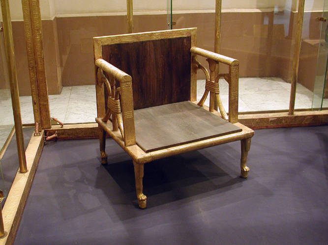
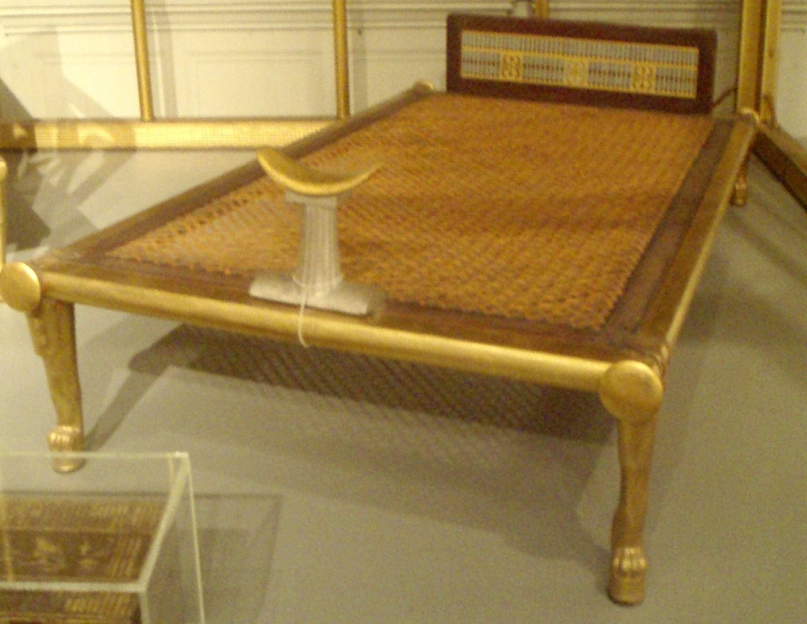

Egyptologists and archeologists for Harvard had been working at Giza for some years before Hetepheres's tomb was discovered in 1925. The leg of a photographer's tripod chipped the plaster covering the tomb, and told the excavators that the ground was not what it seemed to be.
The tomb was excavated by George Reisner, the head of the expedition. It took two years from when it was discovered to when it was finally empty, because every single thing had to be documented exactly. The small room was filled with rubble. The wood had decayed over the years, leaving behind just the gold leaf. Several large stone jars had been placed on wooden shelves; they fell and shattered. Two large armchairs, a bed, and a carrying chair completed the chaos.


After two years, Reisner was finally able to lift the cover off the sarcophagus. Much to his disappointment, it was empty. He was puzzled as to why an empty sarcophagus had been buried with such care, and came up with the theory that you have just lived.